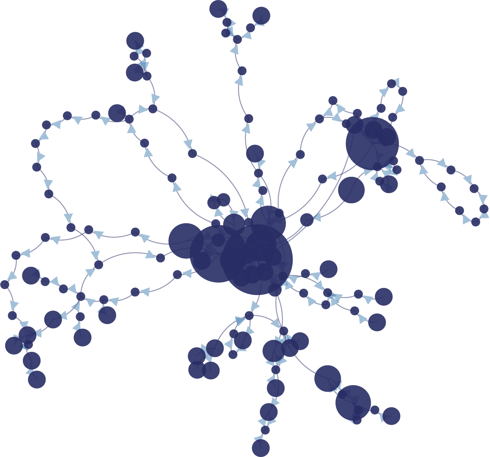

Mindscaping is a journey High up in the sky
Where you look down And see
Valley of Fear, Lake of Desires, Village of Love...
All becoming so clear So small
What it is
Mapping intuitive thinking.
Mindscaping is a technique that maps our intuitive thinking, which displays cyclical patterns, and helps gain new insights about ourselves.
Cartographic Journal.
A safe place to store and visualize mindscapes captured on your journey to the inner space. A journal is keeping a habit of reflection and intuitive guidance.

Interconnected.
Grow together in your inner journey with the online community of mindscapers.
Your own your data.
Your account is only accessible by you. Your data transit is protected. Your entries are encrypted at storage in our data base.
How it Works
Step 1: Stream of Conciousness
Mindscaping is an intimate conversation with yourself. Write down anything that crosses your mind: this continuous, uninterrupted flow of thoughts, we call it the “stream of consciousness”.
Step 2: Flow of Attention
Flow is the motion of thinking. Like water flows continuously downhill due to gravity, our thinking is driven by the focus of attention. Different from water, in mindscaping, we can go back easily and see where our flow has been “physically”.
Step Three: Diagram of Perceptions
Mindscapes help you identify the relationships between your thoughts, the patterns of perceptions, where your values, and intervention can be made of your mental models.